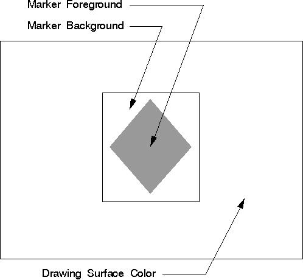

<HTML>
<HEAD>
<TITLE>Marker Color and Mix Attributes</TITLE>
</HEAD>
<BODY>
<H1>Marker Color and Mix Attributes</H1><!-- entering slot 188 -->
<P>
The color attribute defines the color used to draw a primitive or an object.
The mix attribute determines how the color of a primitive or an object is
combined with the color of the drawing surface, or any other objects on
the surface.
<P>
The marker color defines the color used to draw the output from any of the
IBM OS/2 marker functions. When a presentation space is created, the marker
color initial default is black. Markers are one of the primitives that have
a foreground and background color, as shown in the following figure.
<P>
For image markers, the colors are determined by the setting of pels. For
vector markers, the foreground consists of the arcs and lines that define
the marker. The background color appears between the foreground lines. The
marker can be solid, or filled, in which case the background color does
not appear between the foreground lines.<!-- Unable to decode bitmap format -->
<P>
Marker Primitives
<P>
Marker primitives have both a color and background color attribute. The
mix attribute controls the combination of marker color with drawing-surface
color, while the background mix attribute controls the combination of the
marker box color with the drawing-surface color.
<P>
When a presentation space is created, the marker mix attribute initial default
is FM_OVERPAINT. The<I> overpaint</I> mix attribute specifies that the marker
color is not to be modified by the color of the drawing surface. If the
marker mix attribute is changed, the marker color is mixed with colors that
are already on the drawing surface.
<P>
The marker background color initial default is CLR_BACKGROUND. Usually this
is defined by the application to the same color as the drawing surface.
The marker background mix attribute initial default is BM_LEAVEALONE. The
<I>leave-alone</I> mix background attribute specifies that the marker background
color is not drawn. The box that effectively surrounds the marker appears
only if the marker background mix attribute is changed.
<P>
To specify a new color or mix attribute call<A><!-- external link: 1D 20 C4 FC --> GpiSetAttrs</A>.
This function accepts as input the type of primitive, for example PRIM_MARKER,
a list of attributes that are to be changed, a list of attributes that are
to be set to their default values, and the values for the attributes that
are to be changed.<A><!-- external link: 1D 20 C4 56 --> GpiSetAttrs</A> is
useful to specify colors and mix attributes just for a specific data structure-
<A><!-- external link: 1D 8A C4 FC -->MARKERBUNDLE</A>, for example.<A><!-- external link: 1D 20 C4 56 --> GpiSetAttrs
</A>also provides some protection against invalid colors.
<P>
To determine the current marker color and mix attribute call<A><!-- external link: 1D B8 C3 FC --> GpiQueryAttrs</A>.
This function accepts as input the primitive type and the attributes in
question. It returns as output an array of values for the specifically queried
attributes.
<P>
To reset the default marker color and mix attribute, just as with any other
attribute specified in the MARKERBUNDLE data structure, call<A><!-- external link: 1D 35 C4 FC --> GpiSetDefAttrs</A>.
This function accepts as input the type of primitive, for example PRIM_MARKER,
the attributes to be changed, and the values that will become the new default
values. The changing of default values is important when working with segments.
Changing the default values during a series of drawing functions is not
recommended.
<P>
The marker color and mix attribute also can be specified with:<!-- lm: 0x2 3 -->
<UL>
<P>
<LI><!-- lm: 0x2 6 --><A><!-- external link: 1D 31 C4 FC -->GpiSetColor
</A><!-- lm: 0x2 3 -->
<BR>
<LI><!-- lm: 0x2 6 --><A><!-- external link: 1D 49 C4 FC -->GpiSetMix</A><!-- lm: 0x2 3 -->
<BR>
<LI><!-- lm: 0x2 6 --><A><!-- external link: 1D 21 C4 FC -->GpiSetBackColor
</A><!-- lm: 0x2 3 -->
<BR>
<LI><!-- lm: 0x2 6 --><A><!-- external link: 1D 22 C4 FC -->GpiSetBackMix
</A><!-- lm: 0x2 1 -->
</UL>
<P>
However, these functions have the disadvantage of specifying the foreground
and background color or mix attribute for all primitive BUNDLE data structures
that have the respective component.
<P>
There are four query functions that determine the color and mix attribute
as specified by GpiSet... functions:<!-- lm: 0x2 3 -->
<UL>
<P>
<LI><!-- lm: 0x2 6 --><A><!-- external link: 1D CD C3 FC -->GpiQueryColor
</A><!-- lm: 0x2 3 --><!-- lm: 0x2 6 -->
<UL><A><!-- external link: 1D F5 C3 FC -->GpiQueryMix
</A><!-- lm: 0x2 3 -->
</UL><!-- lm: 0x2 6 -->
<UL><A><!-- external link: 1D B9 C3 FC -->GpiQueryBackColor
</A><!-- lm: 0x2 3 -->
</UL><!-- lm: 0x2 6 -->
<UL><A><!-- external link: 1D BA C3 FC -->GpiQueryBackMix
</A><!-- lm: 0x2 1 -->
</UL>
<P>
If the marker color, marker background color, mix attribute, or background
mix attribute were specified individually, the queries can return a value
inconsistent with the current marker attribute.

<P><HR>

<A HREF="179_L4_CustomizingMarkerSet.html">[Back: Customizing Marker Sets]</A> <BR>
<A HREF="181_L2_UsingMarkerPrimitive.html">[Next: Using Marker Primitives]</A> 
</BODY>
</HTML>
